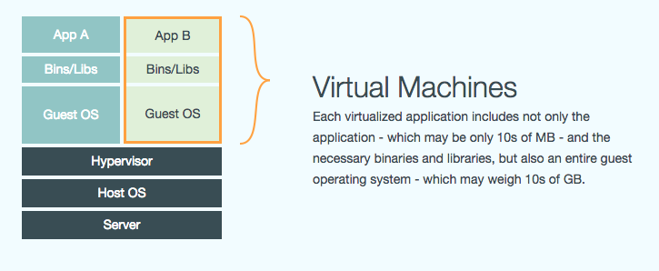

Docker
3. September 2014
What is docker?
With docker you can:
- · build
- · ship
- · run
distributed applications
Main conceptual difference: docker aims to model processes!
What is a linux container?
Think VM...
© https://www.docker.com/whatisdocker/
What is a linux container?
...on a diet

© https://www.docker.com/whatisdocker/
Differences - the good parts
- · Containers run in the same operating system as the host (sharing resources)
- ⇒ But you can restrict resource usage.
- · Docker uses AuFS as file system layer. This divides the filesystem in a read and write layer.
- ⇒ All running containers from the same image share the same readonly filesystem!
- · Intermediary build images are cached
- · Superfast startup (1-5 seconds)
- · rapidly growing ecosystem with lots of convenience tools
Differences - the bad parts
- · VMs are a bit harder to break out from
- · Docker is linux only (though it works inside a VM)
Building blocks: Images
-
Image
A read only layer (just like a DVD image)
-
Parent image
Each image may depend on another layer beneath it
-
Base image
An image without a parent
Building blocks: Images

© http://docs.docker.com/terms/image/
Building blocks: Containers
-
When you run an image, docker adds a read-write layer on top of it.
-
This writable layer is the container
-
You can promote a container to an image via docker commit
-
Containers can be restarted
Building blocks: Containers

© http://docs.docker.com/terms/container/
Bored already?

© http://www.cutestpaw.com/
What can I do?
How does it work?
The Dockerfile
FROM litaio/ruby
RUN apt-get update -qq && apt-get install -y ca-certificates
RUN gem install bundler
ADD . /root/app
WORKDIR /root/app
ENV HOME /root
RUN bundle install
EXPOSE 3000
ENTRYPOINT bundle exec unicorn -c config/unicorn.rb
The Docker Registry
→ this way ←Demo
docker run base ping google.com
docker ps -a
docker images
docker run -p 7474:7474 --name 'neo4j' -d tpires/neo4j
Container links
(consumer) → (redis)docker run --link neo4j:neo
--name="app" -d "the_app"tcp_address = ENV['NEO_PORT_7474_TCP_ADDR']
port = ENV['NEO_PORT_7474_TCP_PORT']
Data volume container
(neo4j) → (neo4j-data-volume)Dockerfile
VOLUME /data
Starting the container
docker run --name neo4j
--volumes-from neo4j-data-volume
-d neo4j:2.1.2
Multi-server: meet the ambassador pattern
(consumer) → (redis)(consumer) → (redis-ambassador) → (redis)(consumer) → (redis-ambassador) → ☁ → (redis-ambassador) → (redis)
Ambassador example
docker run -d --name redis_ambassador
--expose 6379 -e REDIS_PORT_6379_TCP=tcp://192.168.1.52:6379
svendowideit/ambassador
Security
LXC uses
-
Linux capabilities support:
· list, enable and disable capabilities like
CHOWN, KILL, NET_BIND_SERVICE, SYS_CHROOT, ...
-
Control groups:
· Resource quotas, Access restrictions, ...
-
User namespace
· LXC is no longer running as root
But the docker daemon is!
-
Apparmor, SELinux, other kernel hardening solutions
Tools
The ecosystem is growing rapidly.
Here are some interesting projects.
Tools
Fig
Define and start your depent containers all in one.
web:
build: .
command: bundle exec unicorn -c config/unicorn.rb
links:
- memcached
environment:
- NEO_USER=neoadmin
memcached:
image: borja/docker-memcached
Tools
Decentralized cluster management, failure handling and high availability.
Tools

CoreOS
- A minimal linux system (Linux kernel + systemd)
- + Built for running docker containers
- + Service discovery
-
Fleet (from CoreOS)
- Systemd at the cluster level
Tools
Kubernetes
"Kubernetes is a system for managing containerized applications across multiple hosts, providing basic mechanisms for deployment, maintenance, and scaling of applications."
Tools
Self-hosted Heroku
Build your own infrastructure with a nice UI
Who's using it already?
Google, amazon, IBM, Microsoft, ebay, yandex, newrelic, mailgun, spotify, yelp, ...
You can run it with Red hat, ubuntu, OpenStack, VMWare, azure, EC2, google compute, ...
Questions?
Appendix
Building blocks: Images
Since Docker uses a Union File System, the processes think the whole file system is mounted read-write. But all the changes go to the top-most writeable layer, and underneath, the original file in the read-only image is unchanged. Since images don't change, images do not have state.